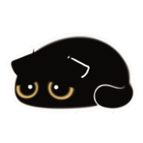

如果你真的一点都不喜欢我了，或者对复合这件事本身没什么想法了，接下来的内容也就没什么意义了吧，那就随便看看吧。
先说说为什么想复合吧
其实原因蛮简单的。现在可以明晰的是，我还是喜欢你，清醒地喜欢你本身，不管什么优点缺点，都是“为什么喜欢你”这个问题的答案。是，我当然也能说出来喜欢的你的优点，但绝不仅仅只有这些。
确实，虽然程度没有多深吧，但我也多少接触到了你脾气不咋地、自私、别扭的一面，我猜也不止这些。
但是就像这句话一样吧，“我对你根本没抱幻想，然而我爱你”。
但！是！听到今晚说的那些，我知道应该也不太可能再在一起了吧,
感觉你好像已经彻底放下了，也是，都四十多天了是谁还在继续破防
一定不是我😇
然后就是我承认我们兴趣爱好确实差得很多(虽然我还是觉得这不是问题(苦笑))，
并且很多问题没有处理好，但我总觉得当时探讨(或者说冷静下来去思考)的过程太草率了，
时间也短，我明白你想快刀斩乱麻，不想耽误期中，确实高瞻远瞩，但我也没想到期中了我还是这个状态()
我也不想在这个时间打扰你的呜呜呜呜，但我觉得顺着晚上说的，直接把这个解决了也挺好，反正是最后一次了。
不然等到五一放假再来翻这个感觉更像翻旧账。
嗯...实在不知道起什么标题了
其实我能猜到，可能你早就不喜欢了，所说的一部分原因只是用来委婉地拒绝而已，但我不太想相信，这也是一种自我保护机制吧。
我们都没有那么好。不知道你发现没有，其实我老怂了，在一些事上犹犹豫豫的，不是说选恐的那种。比如这个给你发的短信，我猜我当天一定是多少喝了点才敢发出去。
我还有好多好多缺点，一百零八种坏毛病，但我真的有在为了你和未来变得更好,上学期经常自闭就是因为自己太菜了，啥都不会，缺陷毛病还特别多。我原本觉得和对方一起慢慢磨掉这些，把能戳伤对方的棱角变得圆润这件事特别浪漫。但应该也没机会了，和你。
我知道你现在确实很忙，学习上工作上，时间干什么都不太够，我也很忙，乱七八糟一堆事，所以我猜你觉得，现在这个状态谈恋爱确实显得有点多余，空出来的时间干什么不好啊是吧，而且何必再去试错呢。
所以我甚至考虑过什么几十年之后再重逢的乱七八糟的可能性，但是好没谱啊，到时候我们可能已经彼此相忘，可能已经有人陪在身边。想想就好痛苦。我发现我没办法迫使自己去抽离所有关于你的事情，上课老师说个“造成”我都会幻听然后浅浅破防。
上心理课老师让我们想象未来，当我意识到我的未来可能再也不会有你出现了，然后又碎了一下，挺好的碎碎平安。
所以我觉得，既然我没办法控制自己的心意，那我也不去后悔去顺从它。
最后
啊说的好乱啊，反正中心思想就是能不能再试一下，我们可以再熟悉，变得更熟，我们可以不那么着急，take it slowly，在不消耗你太多精力的前提下，我也可以努力和你一起去你想要的未来。 如果你不想，我也不能说什么，只能表示你还是没品(bushi) 怎么说呢，这些话也不是“求求你能不能再给我一次机会啊呜呜呜呜”的意思，只是对我来说这段感情始终没有一个句号，不管圆不圆满。 “无法拥有的人要好好告别”，如果最后我们没有机会再一起走了，那等你看完这些，我也会觉得这段感情结束得很完整吧，起码我已经把剩下的喜欢传达给你了。